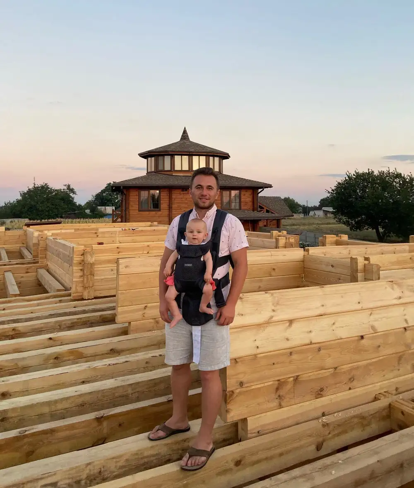

Dyrektor służby w Polsce
Anna Rozhkova
Polska
„Praca z młodymi ludźmi i uczniostwo nastolatków od 12. roku życia to najlepszy czas, by położyć fundament prawdziwej wiary.” Odpowiada również za szkołę uczniostwa i administrację misji.
Nasi misjonarze służą na pełen etat, utrzymywani wyłącznie z darowizn partnerów. Każdą z tych osób możesz wesprzeć bezpośrednio — twoje wsparcie trafia do konkretnego człowieka i konkretnej służby.
Zespół w Polsce
Po 24 lutego 2022 roku Rzeszów stał się naszą bazą. To stąd prowadzimy niedzielne kluby, obozy i szkolenia dla dzieci oraz nastolatków z rodzin uchodźczych.
Dyrektor służby w Polsce
Polska
„Praca z młodymi ludźmi i uczniostwo nastolatków od 12. roku życia to najlepszy czas, by położyć fundament prawdziwej wiary.” Odpowiada również za szkołę uczniostwa i administrację misji.
Pastor młodzieżowy
Polska
Poświęcił lata służbie ukraińskim dzieciom i nastolatkom uchodźczym. Dziś jest pastorem młodzieżowym i wychowuje własny zespół nastoletnich liderów.
Misjonarka
Rzeszów
Pierwszy wyjazd misyjny odbyła w 2017 roku, mając 12 lat. Po ukończeniu szkoły powiedziała „tak” służbie na pełen etat: „To była najlepsza decyzja mojego życia.” Prowadzi obozy dziecięce, kluby nastolatków i wydarzenia dla dzieci.

Misjonarka pełnoetatowa
Rzeszów
Urodzona w Ukrainie, poznała Jezusa w wieku 16 lat. Gdy w 2022 roku wybuchła wojna, zaczęła pomagać Solid Rock w Polsce — i została.
Misjonarka
Polska
Jej wizją jest zobaczyć „setki kościołów i centrów szkolenia misjonarzy założonych na całym świecie”.
Misjonarze
Rzeszów
„Naszym celem jest przeprowadzka do Rzeszowa jesienią 2025 roku, by rozpocząć z Panem nową drogę w służbie.”
Misjonarka
Polska
Rosyjska inwazja zmusiła ją do opuszczenia Ukrainy. Przeprowadziła się do Polski z mocnym pragnieniem, by głosić Ewangelię Ukraińcom, którzy znaleźli się tu razem z nią.
Kierownictwo misji

Założyciele · Dyrektor · Ewangelista
Założyli Solid Rock Mission w 2012 roku. Pierwszy obóz zgromadził 90 dzieci — dziś przez programy misji przeszło ponad 20 tysięcy młodych ludzi w Ukrainie, Polsce i Niemczech.
„Współpracując z nami, nasza służba staje się twoją służbą — a my będziemy przedłużeniem twoich rąk i nóg w głoszeniu Ewangelii.”
Zespół pastorski
Ukraina
Pavel urodził się w 1984 roku w niechrześcijańskim domu, w rodzinie liczącej 21 dzieci, z czego 18 adoptowanych. Razem z Inną mają dziewięcioro dzieci, w tym czworo adoptowanych.
Zakładanie kościołów
Hubynycha, Ukraina
Ukończyli szkolenie misjonarskie latem 2017 roku. Skupiają się na głoszeniu Ewangelii i czynieniu uczniów w swojej wsi.
Administracja
Ukraina
Po studiach szykowała się do dobrze płatnej pracy, ale w 2008 roku odczuła powołanie do misji. Zrezygnowała z etatu i poświęciła życie służbie.
Dyrektor misji krótkoterminowych
Ukraina / USA
Urodzona w Ukrainie, wychowana w Stanach. W 2022 roku Bóg powołał ją, by rzuciła pracę i wróciła do Ukrainy. „Pragnę widzieć ludzi zbawionych, uwolnionych, uzdrowionych i odnowionych.”
Szersza sieć
Zespół w Polsce jest częścią większej rodziny. Wszystkie profile i możliwość wsparcia znajdziesz na stronie głównej misji.
Ksenia Pole, Vlad Andrushkevych, Vyacheslav i Karina Vynokurovy, Slavik i Anastasia Boldyrev, Polina Sagaydak, Linda Vrublevska, Daria Nastenko, Tanya Moskalenko, Yana Panchenko, Karen i Polina Hinosian, Mark Gospel, Daria Goriacheva.
Ruslan Garbar — Niemcy, po ukończeniu szkoły uczniostwa wyjechał dziesięć lat temu z YWAM. Anatoliy Solodovnyk — Francja, ochrzczony Duchem Świętym w wieku sześciu lat podczas przebudzenia.
Inna Merzla — Kenia. Pochodzi z Kijowa. „Bóg włożył w moje serce marzenie, by dotrzeć z Ewangelią do ludzi w Afryce.”
Nasi misjonarze nie otrzymują pensji z budżetu. Ich służba trwa tak długo, jak długo stoją za nimi partnerzy.